1. 引言
2. 需求概要分析
3. 系统概述
4. 总体设计
5. 详细设计
6. 数据设计
7. 接口设计
8. 运行与部署设计
9. 安全与权限设计
10. 测试与验证
11. 结论
本文档用于说明面向越南留学生的铁道专业汉越术语翻译学习软件V1.0的需求背景、系统结构、功能模块、详细流程、数据对象、关键接口、运行部署、安全权限和测试验证情况，作为软件著作权登记材料中的软件设计说明书。
面向越南留学生的铁道专业汉越术语翻译学习软件V1.0包含前端页面、后端接口、数据库结构、运行脚本和配套配置。系统围绕留学生学习或管理业务提供登录认证、业务数据查询、核心流程处理、统计分析、权限控制和运行部署能力。
随着中国—东盟全面战略伙伴关系持续深化，中越双边基建合作、铁路互联互通项目落地提速，跨境铁路建设、运维、人才交流合作日益频繁，铁道领域国际化人才缺口持续扩大。依托“一带一路”教育合作、中国—东盟职教共同体建设政策红利，国内各大高校持续扩招越南铁道专业来华留学生，越来越多越南学子来华学习轨道交通、铁道工程、铁路运维等核心专业，助力中越铁路经贸与基建协同发展。
当前，越南铁道留学生在专业学习中面临显著的语言与专业适配难题。铁道行业术语专业性强、精准度要求高、专有词汇量大，通用翻译软件存在术语翻译不规范、行业释义缺失、汉越对照不贴合铁道场景等问题。同时，目前缺乏针对性的铁道专业汉越术语学习工具，留学生课堂听课、教材研读、实验实操、毕业设计及后续跨境就业对接时，常因术语理解偏差、双语转换不熟练出现学习障碍，极大影响专业学习效率与人才培养质量。
为适配中越铁道领域人才交流需求，解决越南留学生专业术语学习痛点，搭建专业化、场景化的双语术语学习体系，助力留学生快速掌握铁道专业核心词汇，夯实专业基础，同时为中越铁路领域技术交流、人才互通提供基础支撑，因此开发本铁道专业汉越术语翻译学习软件极具现实必要性与应用价值。
本软件建设目标是形成可运行、可维护、可扩展的面向越南留学生的铁道专业汉越术语翻译学习软件，通过 Web/H5 页面与后端接口整合业务数据，减少人工处理和零散表格管理带来的低效问题，提升留学生使用体验、教师管理效率和业务数据可追溯性。
| 模块 | 服务角色 | 核心职责 | 接口或页面 | 核心数据 |
|---|---|---|---|---|
| 认证与权限模块 | 管理员、教师、学生 | 统一登录、令牌签发、角色判断和密码修改 | /api/auth/* | sys_user、sys_role、sys_login_log |
| 术语分类模块 | 管理员、教师、学生 | 术语分类查询、新增、编辑和删除 | /api/terms/categories | term_category |
| 铁道术语模块 | 管理员、教师、学生 | 汉越英术语查询、分页、检索、收藏、新增和编辑 | /api/terms | railway_term、favorite_term |
| 练习测评模块 | 学生 | 选择题、判断题、填空题、翻译题出题和提交判分 | /api/practice/* | practice_record、practice_answer |
| 学习分析模块 | 学生、管理员 | 练习统计、正确率、分类趋势、错题统计和管理端汇总 | /api/analysis/* | practice_record、wrong_question |
| 系统管理模块 | 管理员、教师 | 用户、角色、登录日志和操作日志查询管理 | /api/system/* | sys_user、sys_role、sys_login_log、sys_operation_log |
系统应支持本地 Linux 服务器运行，使用 Node.js、浏览器和 MySQL 等支撑环境；应对账号、密码、数据库连接、令牌和接口地址进行脱敏；应通过真实运行页面、接口调用、数据库数据和 PDF 页数校验证明材料完整性。
面向越南留学生的铁道专业汉越术语翻译学习软件V1.0的系统边界包括浏览器/H5 页面、前端路由与组件、API 请求封装、Node.js/Express 后端、认证与角色权限控制、业务路由模块和 MySQL 数据库。普通用户主要通过 H5 页面完成学习、资料、成绩或业务查询，管理角色通过桌面管理页面完成列表维护、统计分析和风险处理。
| 序号 | 截图文件 | 页面名称 | 校准方式 |
|---|---|---|---|
| 1 | 01_h5_login_zh.png | H5 中文登录页 | H5 竖屏校准截图 |
| 2 | 02_h5_login_en.png | H5 英文登录页 | H5 竖屏校准截图 |
| 3 | 03_h5_login_vi.png | H5 越南语登录页 | H5 竖屏校准截图 |
| 4 | 04_h5_dashboard_zh.png | H5 学习看板页 | H5 竖屏校准截图 |
| 5 | 05_h5_practice_config.png | H5 练习配置页 | H5 竖屏校准截图 |
| 6 | 06_h5_choice_practice.png | H5 选择题练习页 | H5 竖屏校准截图 |
| 7 | 07_h5_analysis_wrongbook.png | H5 学习分析与错题页 | H5 竖屏校准截图 |
| 8 | 08_admin_terms_list.png | 管理端术语列表页 | 桌面横屏截图 |
| 9 | 09_admin_terms_search.png | 管理端术语检索页 | 桌面横屏截图 |
| 10 | 10_admin_practice_result.png | 管理端练习结果页 | 桌面横屏截图 |
| 11 | 11_admin_system_users.png | 管理端用户列表页 | 桌面横屏截图 |
| 12 | 12_admin_dashboard_vi.png | 管理端越南语看板页 | 桌面横屏截图 |
| 模块 | 服务角色 | 核心职责 | 接口或页面 | 核心数据 |
|---|---|---|---|---|
| 认证与权限模块 | 管理员、教师、学生 | 统一登录、令牌签发、角色判断和密码修改 | /api/auth/* | sys_user、sys_role、sys_login_log |
| 术语分类模块 | 管理员、教师、学生 | 术语分类查询、新增、编辑和删除 | /api/terms/categories | term_category |
| 铁道术语模块 | 管理员、教师、学生 | 汉越英术语查询、分页、检索、收藏、新增和编辑 | /api/terms | railway_term、favorite_term |
| 练习测评模块 | 学生 | 选择题、判断题、填空题、翻译题出题和提交判分 | /api/practice/* | practice_record、practice_answer |
| 学习分析模块 | 学生、管理员 | 练习统计、正确率、分类趋势、错题统计和管理端汇总 | /api/analysis/* | practice_record、wrong_question |
| 系统管理模块 | 管理员、教师 | 用户、角色、登录日志和操作日志查询管理 | /api/system/* | sys_user、sys_role、sys_login_log、sys_operation_log |
系统采用浏览器前端、Node.js/Express 服务端和 MySQL 数据库的分层结构。前端负责页面展示、路由跳转、语言切换和 API 请求封装，服务端负责身份认证、权限校验、业务路由、数据聚合和异常处理，数据库负责保存用户、业务主数据、关系数据和记录数据。
各模块按照“页面入口 - 请求封装 - 认证权限 - 业务路由 - 数据对象 - 结果展示”的链路协作。前端只保留页面状态和必要的会话信息，后端统一承担权限判断、参数校验、数据读写和错误返回，数据库表或业务对象之间通过用户身份、业务主数据、记录数据和日志数据建立关联。
本说明书将主要 UML 图编排在第 5 章详细设计正文中。用例图用于表达角色与功能入口，时序图用于表达接口调用链路，活动图用于表达业务处理路径，组件图和部署图用于表达系统运行结构，数据对象图用于表达核心数据关系。
| 序号 | 详细设计小节 | UML 图文件 | 图示说明 TXT | 图示类型 |
|---|---|---|---|---|
| 1 | 系统组件与调用关系设计 | 01_system_component.svg | 01_system_component.txt | component |
| 2 | 运行部署结构设计 | 02_deployment.svg | 02_deployment.txt | deployment |
| 3 | 认证权限状态设计 | 03_permission_state.svg | 03_permission_state.txt | state |
| 4 | 核心数据对象设计 | 04_data_object.svg | 04_data_object.txt | class |
| 5 | 认证与权限模块用例设计 | 05_module_1_use_case.svg | 05_module_1_use_case.txt | usecase |
| 6 | 认证与权限模块接口调用时序设计 | 06_module_1_sequence.svg | 06_module_1_sequence.txt | sequence |
| 7 | 认证与权限模块业务活动设计 | 07_module_1_activity.svg | 07_module_1_activity.txt | activity |
| 8 | 认证与权限模块状态转换设计 | 23_module_1_state.svg | 23_module_1_state.txt | state |
| 9 | 认证与权限模块组件协作设计 | 29_module_1_component.svg | 29_module_1_component.txt | component |
| 10 | 认证与权限模块数据关系设计 | 30_module_1_data.svg | 30_module_1_data.txt | class |
| 11 | 术语分类模块用例设计 | 08_module_2_use_case.svg | 08_module_2_use_case.txt | usecase |
| 12 | 术语分类模块接口调用时序设计 | 09_module_2_sequence.svg | 09_module_2_sequence.txt | sequence |
| 13 | 术语分类模块业务活动设计 | 10_module_2_activity.svg | 10_module_2_activity.txt | activity |
| 14 | 术语分类模块状态转换设计 | 24_module_2_state.svg | 24_module_2_state.txt | state |
| 15 | 术语分类模块组件协作设计 | 31_module_2_component.svg | 31_module_2_component.txt | component |
| 16 | 术语分类模块数据关系设计 | 32_module_2_data.svg | 32_module_2_data.txt | class |
| 17 | 铁道术语模块用例设计 | 11_module_3_use_case.svg | 11_module_3_use_case.txt | usecase |
| 18 | 铁道术语模块接口调用时序设计 | 12_module_3_sequence.svg | 12_module_3_sequence.txt | sequence |
| 19 | 铁道术语模块业务活动设计 | 13_module_3_activity.svg | 13_module_3_activity.txt | activity |
| 20 | 铁道术语模块状态转换设计 | 25_module_3_state.svg | 25_module_3_state.txt | state |
| 21 | 铁道术语模块组件协作设计 | 33_module_3_component.svg | 33_module_3_component.txt | component |
| 22 | 铁道术语模块数据关系设计 | 34_module_3_data.svg | 34_module_3_data.txt | class |
| 23 | 练习测评模块用例设计 | 14_module_4_use_case.svg | 14_module_4_use_case.txt | usecase |
| 24 | 练习测评模块接口调用时序设计 | 15_module_4_sequence.svg | 15_module_4_sequence.txt | sequence |
| 25 | 练习测评模块业务活动设计 | 16_module_4_activity.svg | 16_module_4_activity.txt | activity |
| 26 | 练习测评模块状态转换设计 | 26_module_4_state.svg | 26_module_4_state.txt | state |
| 27 | 练习测评模块组件协作设计 | 35_module_4_component.svg | 35_module_4_component.txt | component |
| 28 | 练习测评模块数据关系设计 | 36_module_4_data.svg | 36_module_4_data.txt | class |
| 29 | 学习分析模块用例设计 | 17_module_5_use_case.svg | 17_module_5_use_case.txt | usecase |
| 30 | 学习分析模块接口调用时序设计 | 18_module_5_sequence.svg | 18_module_5_sequence.txt | sequence |
| 31 | 学习分析模块业务活动设计 | 19_module_5_activity.svg | 19_module_5_activity.txt | activity |
| 32 | 学习分析模块状态转换设计 | 27_module_5_state.svg | 27_module_5_state.txt | state |
| 33 | 学习分析模块组件协作设计 | 37_module_5_component.svg | 37_module_5_component.txt | component |
| 34 | 学习分析模块数据关系设计 | 38_module_5_data.svg | 38_module_5_data.txt | class |
| 35 | 系统管理模块用例设计 | 20_module_6_use_case.svg | 20_module_6_use_case.txt | usecase |
| 36 | 系统管理模块接口调用时序设计 | 21_module_6_sequence.svg | 21_module_6_sequence.txt | sequence |
| 37 | 系统管理模块业务活动设计 | 22_module_6_activity.svg | 22_module_6_activity.txt | activity |
| 38 | 系统管理模块状态转换设计 | 28_module_6_state.svg | 28_module_6_state.txt | state |
| 39 | 系统管理模块组件协作设计 | 39_module_6_component.svg | 39_module_6_component.txt | component |
| 40 | 系统管理模块数据关系设计 | 40_module_6_data.svg | 40_module_6_data.txt | class |
详细设计章节按照系统结构、运行部署、权限状态、数据对象和业务模块逐项展开，每个小节均配置对应 UML 图。主要用例图、时序图、活动图、部署图和数据对象图均放在本章正文中，不集中放到文末替代详细设计。
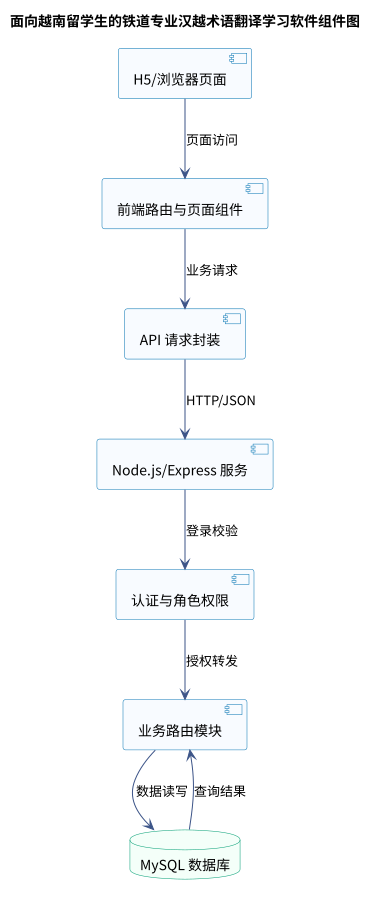
系统组件 UML 图用于说明面向越南留学生的铁道专业汉越术语翻译学习软件的前端页面、请求封装、后端服务、认证权限、业务路由和数据库之间的分层关系。该图由 PlantUML 生成，图中每个节点都对应项目中可核验的页面、服务、接口或数据层职责，用于支撑详细设计中的系统级组件设计。
系统组件关系体现前后端分层与数据访问边界。页面层只负责用户交互和显示，API 请求封装层负责统一调用和令牌携带，服务端根据认证状态进入业务路由，业务路由再围绕数据库对象完成查询、写入和统计。
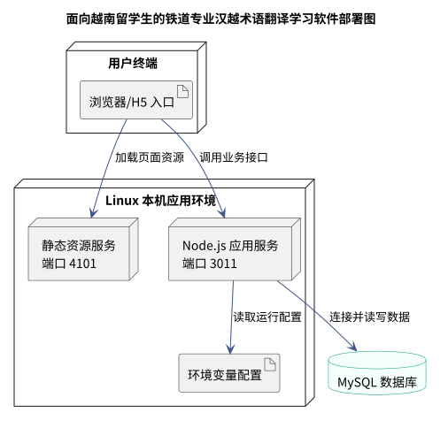
部署 UML 图用于说明面向越南留学生的铁道专业汉越术语翻译学习软件在 Linux 本机应用环境中的部署关系，覆盖用户终端、静态资源服务、Node.js 应用服务、环境变量和 MySQL 数据库。该图由 PlantUML 生成，用于在详细设计正文中说明运行节点、端口关系和服务调用方向。
部署结构体现本机 Linux 环境中的静态资源服务、Node.js 应用服务、环境变量和数据库服务。对外部署时应将前端入口、后端接口和数据库端口区分管理，数据库端口不直接对公网开放。
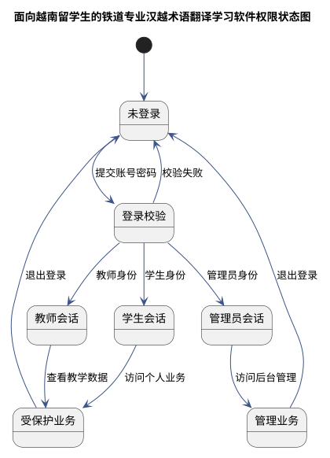
权限状态 UML 图用于说明面向越南留学生的铁道专业汉越术语翻译学习软件从未登录、登录校验、角色会话到受保护业务访问的状态变化。该图由 PlantUML 生成，适合支撑身份认证、角色权限、退出登录和访问控制的详细设计说明。
权限状态设计覆盖未登录、登录校验、角色会话、受保护业务和退出登录等状态。系统通过角色信息区分学生、教师和管理员，确保普通用户仅访问本人相关数据，管理角色访问后台统计与管理功能。
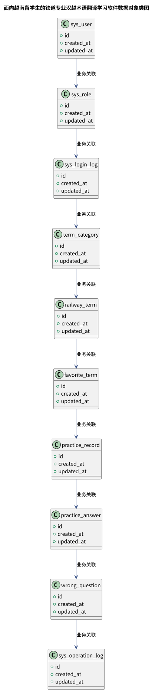
数据对象 UML 类图用于说明面向越南留学生的铁道专业汉越术语翻译学习软件核心业务数据对象之间的关联关系。该图由 PlantUML 生成，数据对象名称来自项目模块中已核验的数据库表或业务对象，用于支撑详细设计和数据设计章节。
数据对象设计体现用户、角色、业务主数据、记录数据、统计数据和日志数据之间的关系。不同项目表名有所差异，但均围绕用户身份、业务对象和操作记录形成可追溯的数据链路。
认证与权限模块面向管理员、教师、学生，主要提供统一登录、令牌签发、角色判断和密码修改。该模块的输入包括登录会话、页面查询条件、业务表单参数和分页条件，输出包括列表数据、详情数据、统计结果、提交结果或异常提示。模块对应接口或页面为 /api/auth/*，核心数据对象为 sys_user、sys_role、sys_login_log。
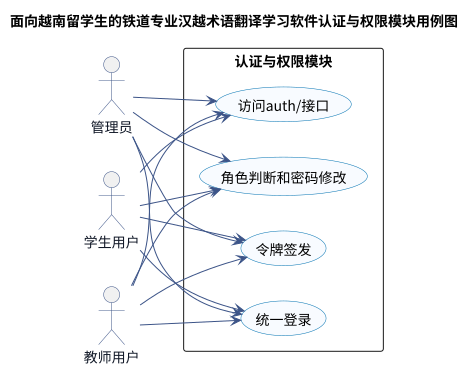
认证与权限模块用例 UML 图用于说明面向越南留学生的铁道专业汉越术语翻译学习软件中管理员、教师、学生围绕统一登录、令牌签发、角色判断和密码修改形成的主要功能入口和业务动作。该图由 PlantUML 生成，图中用例来自已核验模块职责和接口路径 /api/auth/*，用于放入详细设计正文。
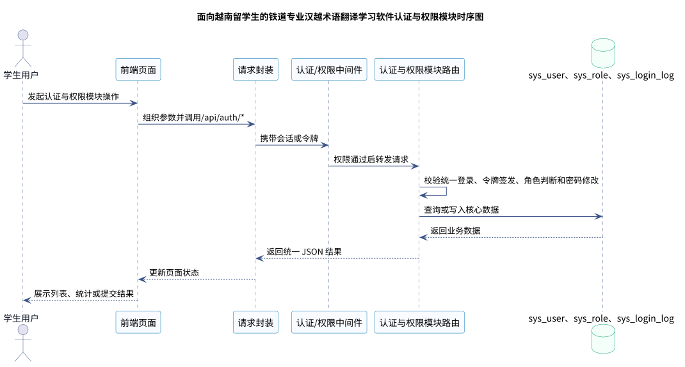
认证与权限模块时序 UML 图用于说明用户、前端页面、请求封装、认证权限中间件、业务路由和数据对象之间的调用顺序。该图由 PlantUML 生成，展示 /api/auth/* 的请求处理链路和 sys_user、sys_role、sys_login_log 的数据读写关系。
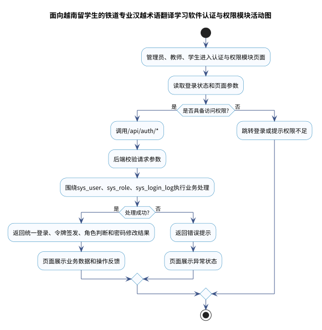
认证与权限模块活动 UML 图用于说明面向越南留学生的铁道专业汉越术语翻译学习软件中认证与权限模块从页面入口、权限判断、接口调用、业务处理、数据读写到结果展示的完整活动流程。该图由 PlantUML 生成，适合支撑详细设计中输入输出、处理流程和异常处理说明。
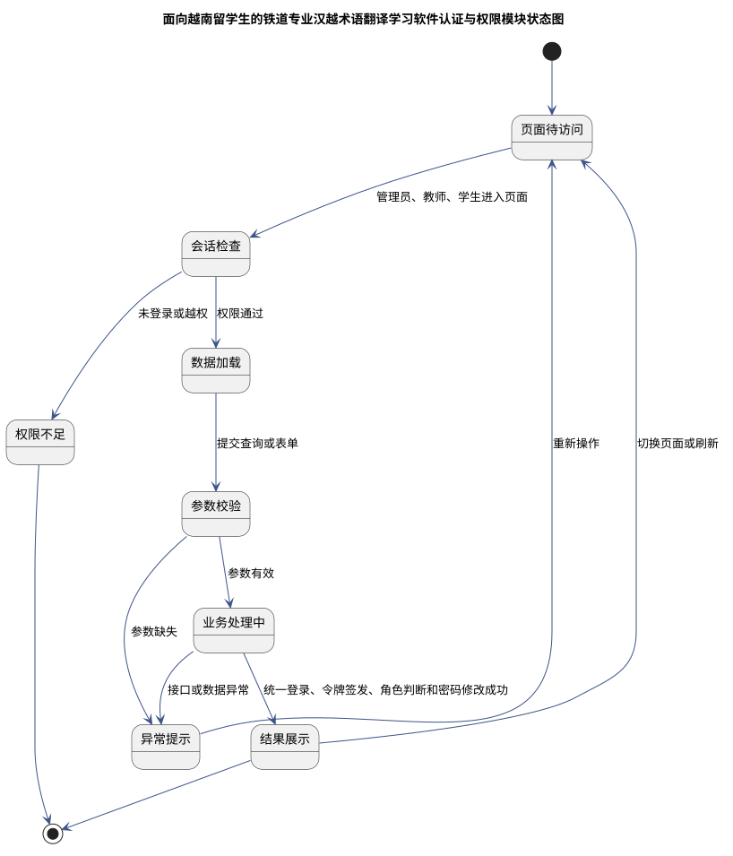
认证与权限模块状态 UML 图用于说明面向越南留学生的铁道专业汉越术语翻译学习软件中认证与权限模块从页面待访问、会话检查、数据加载、参数校验、业务处理、结果展示到异常提示的状态变化。该图由 PlantUML 生成，用于补充详细设计中的异常处理和状态控制说明。
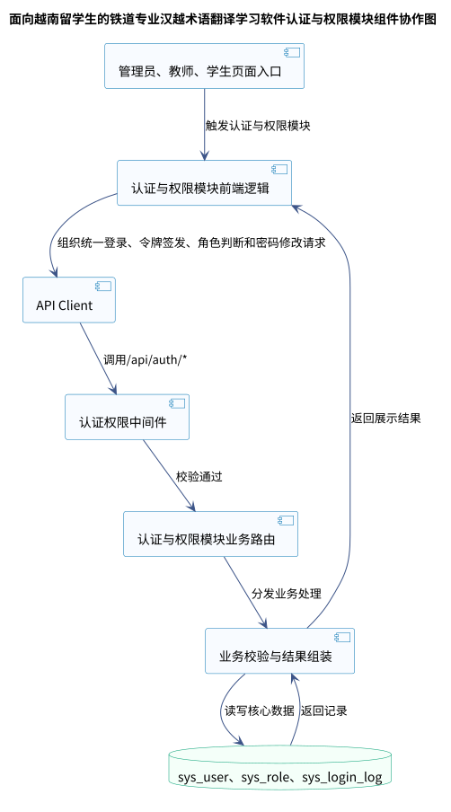
认证与权限模块组件协作 UML 图用于说明面向越南留学生的铁道专业汉越术语翻译学习软件中认证与权限模块的页面入口、前端逻辑、API Client、认证权限中间件、业务路由、业务校验和数据对象之间的协作方式。该图由 PlantUML 生成，用于补充详细设计中的组件职责和调用边界。
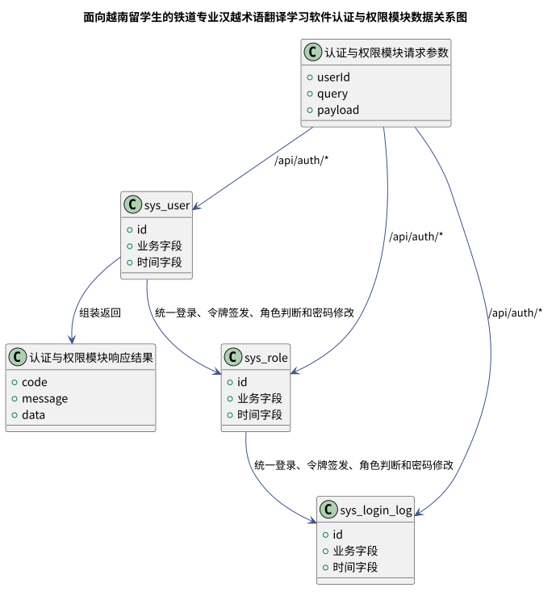
认证与权限模块数据关系 UML 图用于说明面向越南留学生的铁道专业汉越术语翻译学习软件中认证与权限模块请求参数、响应结果和核心数据对象之间的关系。该图由 PlantUML 生成，数据对象来自 sys_user、sys_role、sys_login_log，用于补充详细设计中的数据流转和结果组装说明。
认证与权限模块的处理流程首先由用户在页面中触发操作，前端读取会话状态并组织请求参数；后端通过认证与角色权限中间件判断访问资格，再进入模块路由完成参数校验和业务处理。若数据查询或写入成功，页面展示业务结果；若出现未登录、越权、参数缺失或数据不存在，页面展示明确的异常状态。
异常处理方面，认证与权限模块需要覆盖接口不可达、数据库连接异常、用户权限不足、表单字段缺失和返回数据为空等情况。前端应提供空状态、加载状态、错误提示或回退路径，后端应保持统一响应格式和可追溯日志。
术语分类模块面向管理员、教师、学生，主要提供术语分类查询、新增、编辑和删除。该模块的输入包括登录会话、页面查询条件、业务表单参数和分页条件，输出包括列表数据、详情数据、统计结果、提交结果或异常提示。模块对应接口或页面为 /api/terms/categories，核心数据对象为 term_category。
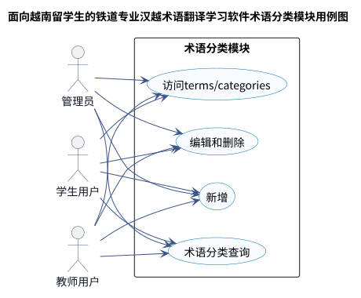
术语分类模块用例 UML 图用于说明面向越南留学生的铁道专业汉越术语翻译学习软件中管理员、教师、学生围绕术语分类查询、新增、编辑和删除形成的主要功能入口和业务动作。该图由 PlantUML 生成，图中用例来自已核验模块职责和接口路径 /api/terms/categories，用于放入详细设计正文。
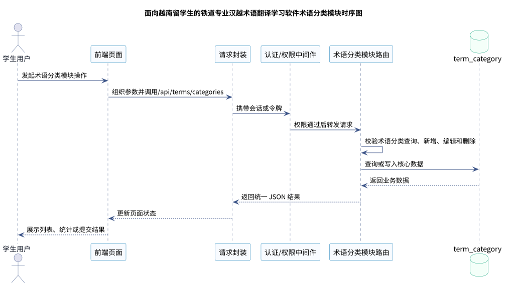
术语分类模块时序 UML 图用于说明用户、前端页面、请求封装、认证权限中间件、业务路由和数据对象之间的调用顺序。该图由 PlantUML 生成，展示 /api/terms/categories 的请求处理链路和 term_category 的数据读写关系。
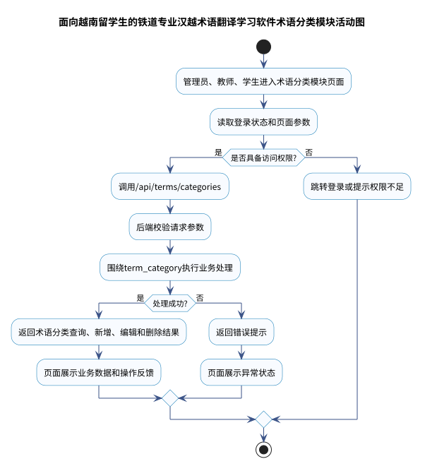
术语分类模块活动 UML 图用于说明面向越南留学生的铁道专业汉越术语翻译学习软件中术语分类模块从页面入口、权限判断、接口调用、业务处理、数据读写到结果展示的完整活动流程。该图由 PlantUML 生成，适合支撑详细设计中输入输出、处理流程和异常处理说明。
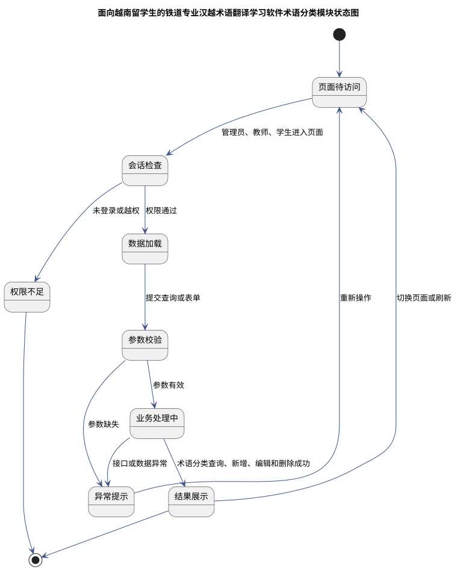
术语分类模块状态 UML 图用于说明面向越南留学生的铁道专业汉越术语翻译学习软件中术语分类模块从页面待访问、会话检查、数据加载、参数校验、业务处理、结果展示到异常提示的状态变化。该图由 PlantUML 生成，用于补充详细设计中的异常处理和状态控制说明。
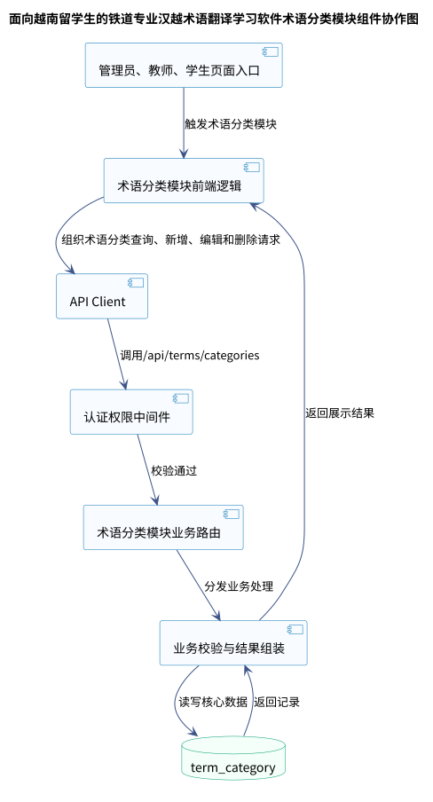
术语分类模块组件协作 UML 图用于说明面向越南留学生的铁道专业汉越术语翻译学习软件中术语分类模块的页面入口、前端逻辑、API Client、认证权限中间件、业务路由、业务校验和数据对象之间的协作方式。该图由 PlantUML 生成，用于补充详细设计中的组件职责和调用边界。
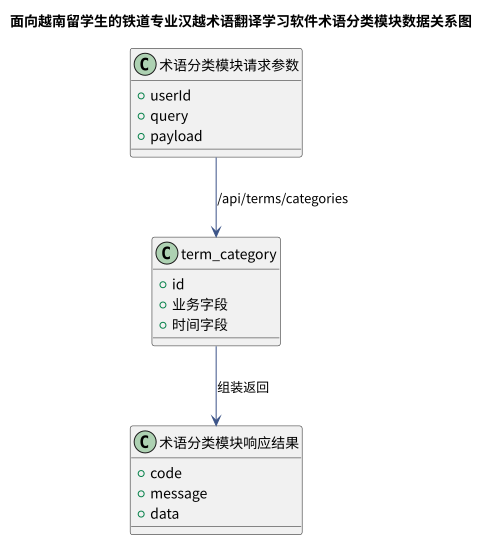
术语分类模块数据关系 UML 图用于说明面向越南留学生的铁道专业汉越术语翻译学习软件中术语分类模块请求参数、响应结果和核心数据对象之间的关系。该图由 PlantUML 生成，数据对象来自 term_category，用于补充详细设计中的数据流转和结果组装说明。
术语分类模块的处理流程首先由用户在页面中触发操作，前端读取会话状态并组织请求参数；后端通过认证与角色权限中间件判断访问资格，再进入模块路由完成参数校验和业务处理。若数据查询或写入成功，页面展示业务结果；若出现未登录、越权、参数缺失或数据不存在，页面展示明确的异常状态。
异常处理方面，术语分类模块需要覆盖接口不可达、数据库连接异常、用户权限不足、表单字段缺失和返回数据为空等情况。前端应提供空状态、加载状态、错误提示或回退路径，后端应保持统一响应格式和可追溯日志。
铁道术语模块面向管理员、教师、学生，主要提供汉越英术语查询、分页、检索、收藏、新增和编辑。该模块的输入包括登录会话、页面查询条件、业务表单参数和分页条件，输出包括列表数据、详情数据、统计结果、提交结果或异常提示。模块对应接口或页面为 /api/terms，核心数据对象为 railway_term、favorite_term。
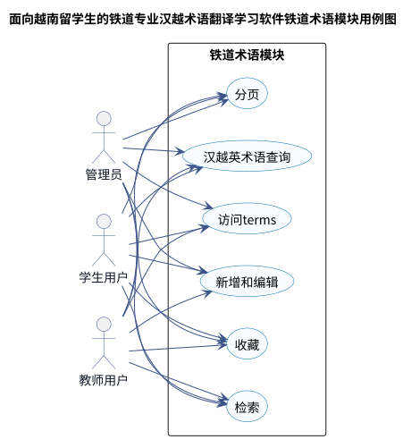
铁道术语模块用例 UML 图用于说明面向越南留学生的铁道专业汉越术语翻译学习软件中管理员、教师、学生围绕汉越英术语查询、分页、检索、收藏、新增和编辑形成的主要功能入口和业务动作。该图由 PlantUML 生成，图中用例来自已核验模块职责和接口路径 /api/terms，用于放入详细设计正文。
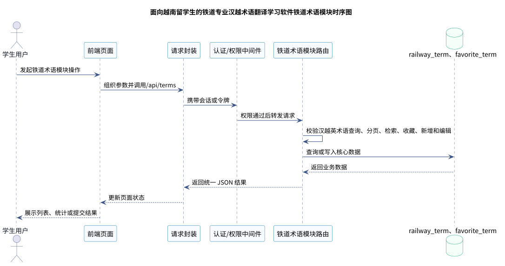
铁道术语模块时序 UML 图用于说明用户、前端页面、请求封装、认证权限中间件、业务路由和数据对象之间的调用顺序。该图由 PlantUML 生成，展示 /api/terms 的请求处理链路和 railway_term、favorite_term 的数据读写关系。
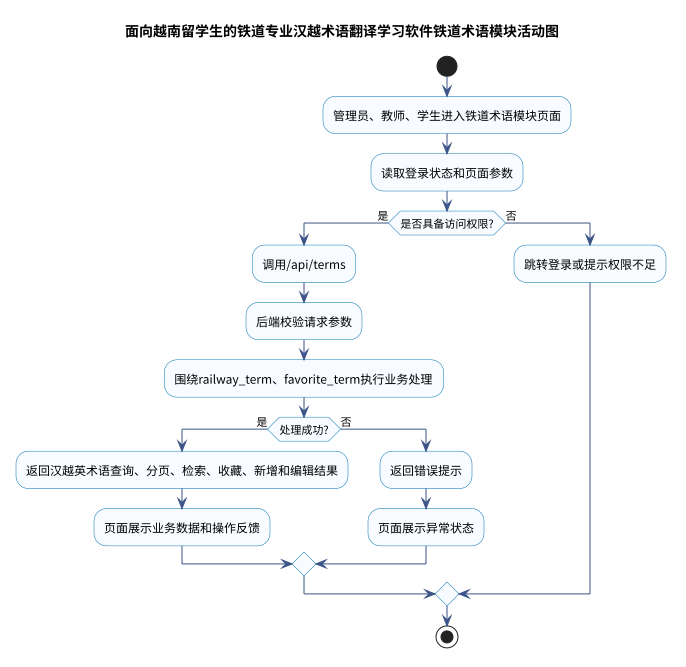
铁道术语模块活动 UML 图用于说明面向越南留学生的铁道专业汉越术语翻译学习软件中铁道术语模块从页面入口、权限判断、接口调用、业务处理、数据读写到结果展示的完整活动流程。该图由 PlantUML 生成，适合支撑详细设计中输入输出、处理流程和异常处理说明。
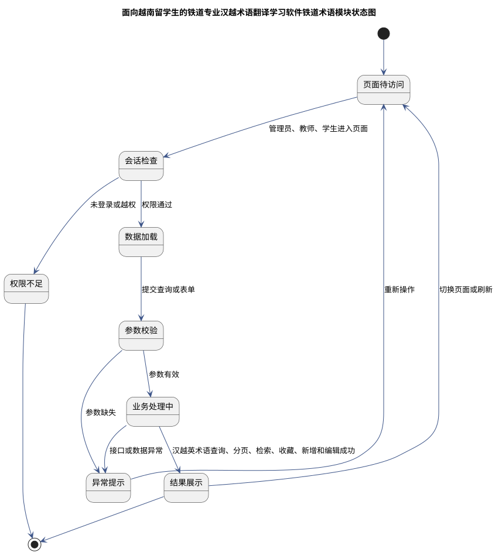
铁道术语模块状态 UML 图用于说明面向越南留学生的铁道专业汉越术语翻译学习软件中铁道术语模块从页面待访问、会话检查、数据加载、参数校验、业务处理、结果展示到异常提示的状态变化。该图由 PlantUML 生成，用于补充详细设计中的异常处理和状态控制说明。
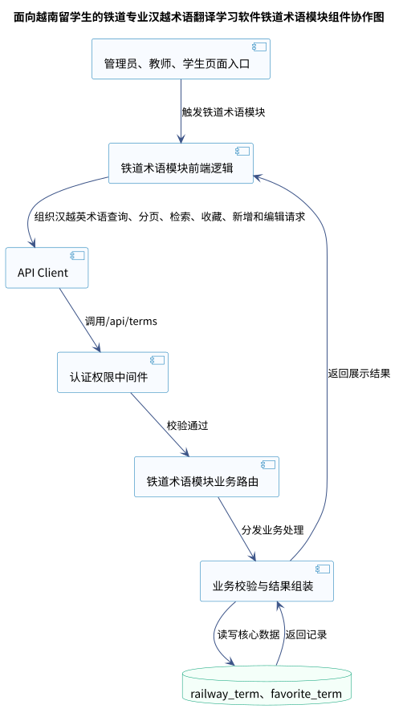
铁道术语模块组件协作 UML 图用于说明面向越南留学生的铁道专业汉越术语翻译学习软件中铁道术语模块的页面入口、前端逻辑、API Client、认证权限中间件、业务路由、业务校验和数据对象之间的协作方式。该图由 PlantUML 生成，用于补充详细设计中的组件职责和调用边界。
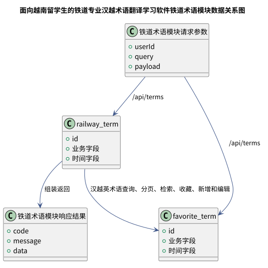
铁道术语模块数据关系 UML 图用于说明面向越南留学生的铁道专业汉越术语翻译学习软件中铁道术语模块请求参数、响应结果和核心数据对象之间的关系。该图由 PlantUML 生成，数据对象来自 railway_term、favorite_term，用于补充详细设计中的数据流转和结果组装说明。
铁道术语模块的处理流程首先由用户在页面中触发操作，前端读取会话状态并组织请求参数；后端通过认证与角色权限中间件判断访问资格，再进入模块路由完成参数校验和业务处理。若数据查询或写入成功，页面展示业务结果；若出现未登录、越权、参数缺失或数据不存在，页面展示明确的异常状态。
异常处理方面，铁道术语模块需要覆盖接口不可达、数据库连接异常、用户权限不足、表单字段缺失和返回数据为空等情况。前端应提供空状态、加载状态、错误提示或回退路径，后端应保持统一响应格式和可追溯日志。
练习测评模块面向学生，主要提供选择题、判断题、填空题、翻译题出题和提交判分。该模块的输入包括登录会话、页面查询条件、业务表单参数和分页条件，输出包括列表数据、详情数据、统计结果、提交结果或异常提示。模块对应接口或页面为 /api/practice/*，核心数据对象为 practice_record、practice_answer。
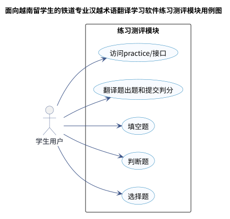
练习测评模块用例 UML 图用于说明面向越南留学生的铁道专业汉越术语翻译学习软件中学生围绕选择题、判断题、填空题、翻译题出题和提交判分形成的主要功能入口和业务动作。该图由 PlantUML 生成，图中用例来自已核验模块职责和接口路径 /api/practice/*，用于放入详细设计正文。
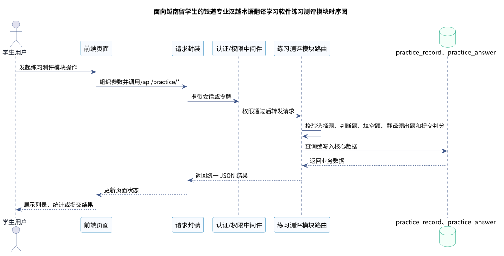
练习测评模块时序 UML 图用于说明用户、前端页面、请求封装、认证权限中间件、业务路由和数据对象之间的调用顺序。该图由 PlantUML 生成，展示 /api/practice/* 的请求处理链路和 practice_record、practice_answer 的数据读写关系。
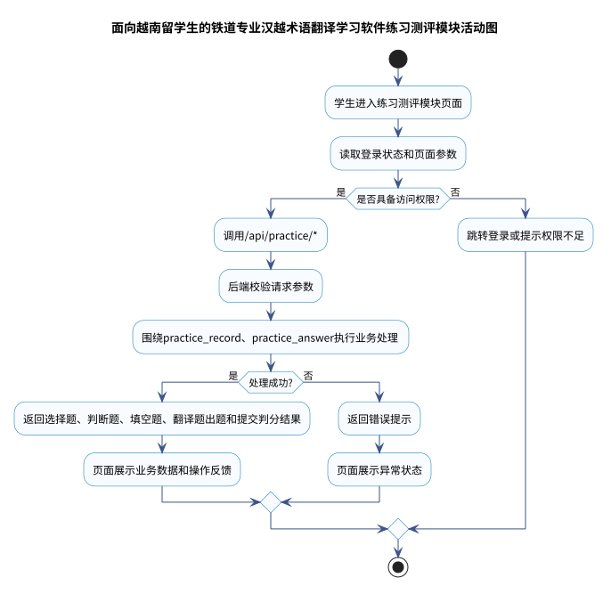
练习测评模块活动 UML 图用于说明面向越南留学生的铁道专业汉越术语翻译学习软件中练习测评模块从页面入口、权限判断、接口调用、业务处理、数据读写到结果展示的完整活动流程。该图由 PlantUML 生成，适合支撑详细设计中输入输出、处理流程和异常处理说明。
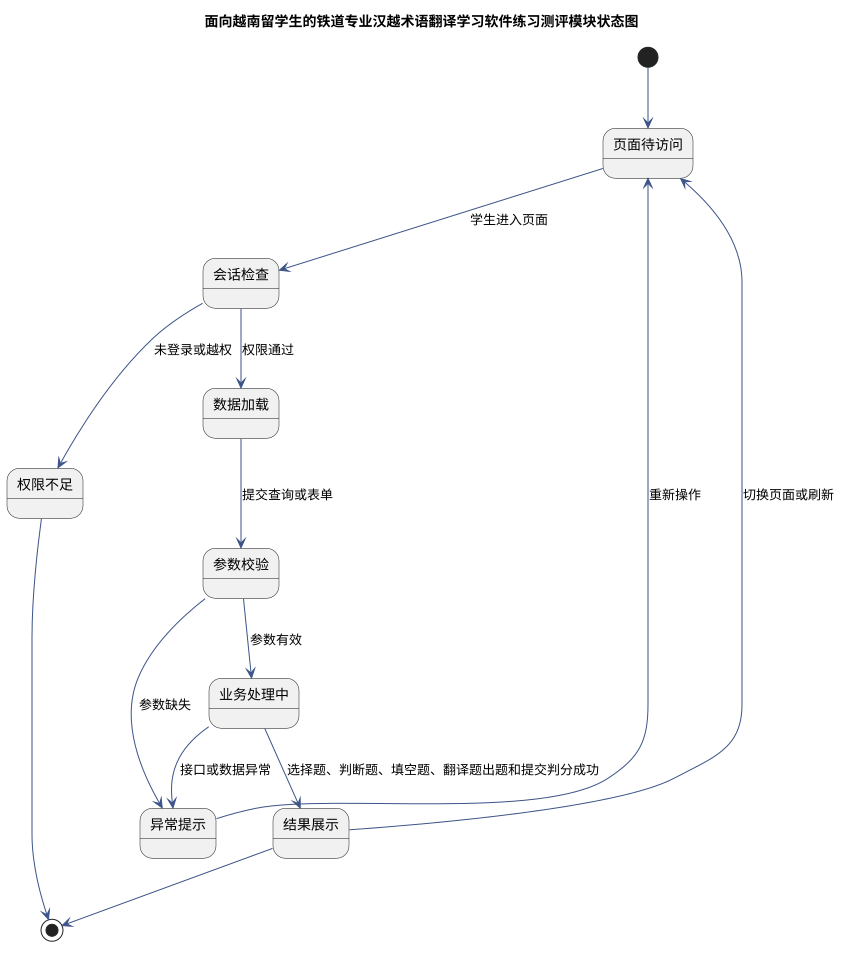
练习测评模块状态 UML 图用于说明面向越南留学生的铁道专业汉越术语翻译学习软件中练习测评模块从页面待访问、会话检查、数据加载、参数校验、业务处理、结果展示到异常提示的状态变化。该图由 PlantUML 生成，用于补充详细设计中的异常处理和状态控制说明。
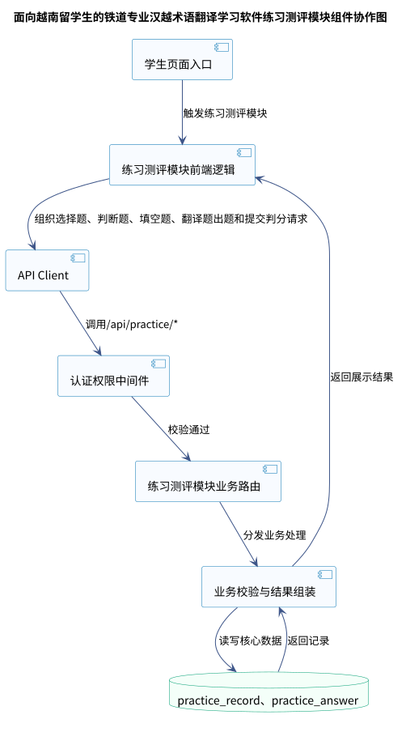
练习测评模块组件协作 UML 图用于说明面向越南留学生的铁道专业汉越术语翻译学习软件中练习测评模块的页面入口、前端逻辑、API Client、认证权限中间件、业务路由、业务校验和数据对象之间的协作方式。该图由 PlantUML 生成，用于补充详细设计中的组件职责和调用边界。
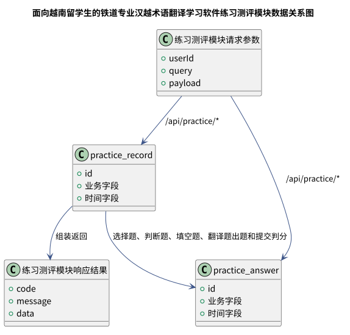
练习测评模块数据关系 UML 图用于说明面向越南留学生的铁道专业汉越术语翻译学习软件中练习测评模块请求参数、响应结果和核心数据对象之间的关系。该图由 PlantUML 生成，数据对象来自 practice_record、practice_answer，用于补充详细设计中的数据流转和结果组装说明。
练习测评模块的处理流程首先由用户在页面中触发操作，前端读取会话状态并组织请求参数；后端通过认证与角色权限中间件判断访问资格，再进入模块路由完成参数校验和业务处理。若数据查询或写入成功，页面展示业务结果；若出现未登录、越权、参数缺失或数据不存在，页面展示明确的异常状态。
异常处理方面，练习测评模块需要覆盖接口不可达、数据库连接异常、用户权限不足、表单字段缺失和返回数据为空等情况。前端应提供空状态、加载状态、错误提示或回退路径，后端应保持统一响应格式和可追溯日志。
学习分析模块面向学生、管理员，主要提供练习统计、正确率、分类趋势、错题统计和管理端汇总。该模块的输入包括登录会话、页面查询条件、业务表单参数和分页条件，输出包括列表数据、详情数据、统计结果、提交结果或异常提示。模块对应接口或页面为 /api/analysis/*，核心数据对象为 practice_record、wrong_question。
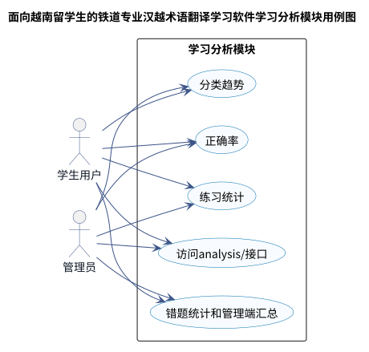
学习分析模块用例 UML 图用于说明面向越南留学生的铁道专业汉越术语翻译学习软件中学生、管理员围绕练习统计、正确率、分类趋势、错题统计和管理端汇总形成的主要功能入口和业务动作。该图由 PlantUML 生成，图中用例来自已核验模块职责和接口路径 /api/analysis/*，用于放入详细设计正文。
学习分析模块时序 UML 图用于说明用户、前端页面、请求封装、认证权限中间件、业务路由和数据对象之间的调用顺序。该图由 PlantUML 生成，展示 /api/analysis/* 的请求处理链路和 practice_record、wrong_question 的数据读写关系。
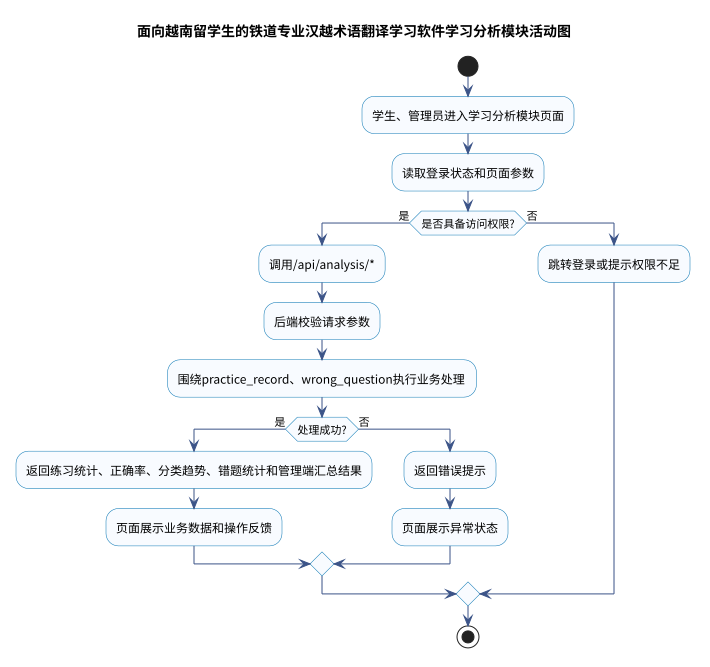
学习分析模块活动 UML 图用于说明面向越南留学生的铁道专业汉越术语翻译学习软件中学习分析模块从页面入口、权限判断、接口调用、业务处理、数据读写到结果展示的完整活动流程。该图由 PlantUML 生成，适合支撑详细设计中输入输出、处理流程和异常处理说明。
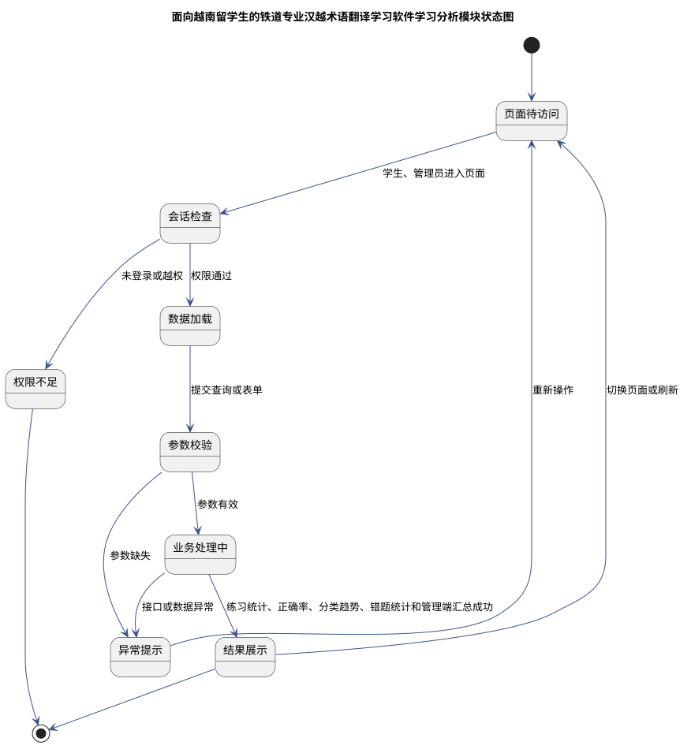
学习分析模块状态 UML 图用于说明面向越南留学生的铁道专业汉越术语翻译学习软件中学习分析模块从页面待访问、会话检查、数据加载、参数校验、业务处理、结果展示到异常提示的状态变化。该图由 PlantUML 生成，用于补充详细设计中的异常处理和状态控制说明。
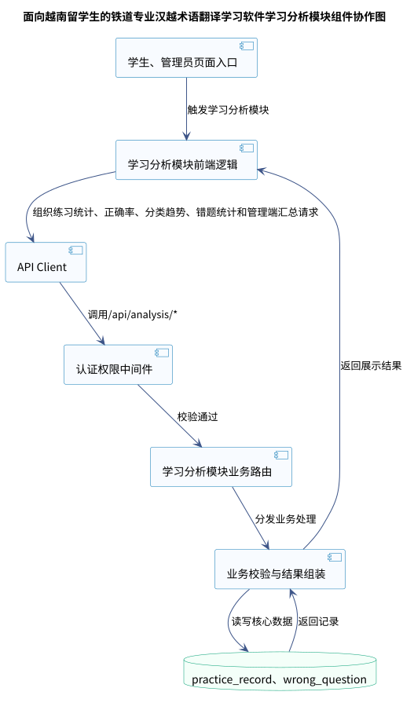
学习分析模块组件协作 UML 图用于说明面向越南留学生的铁道专业汉越术语翻译学习软件中学习分析模块的页面入口、前端逻辑、API Client、认证权限中间件、业务路由、业务校验和数据对象之间的协作方式。该图由 PlantUML 生成，用于补充详细设计中的组件职责和调用边界。
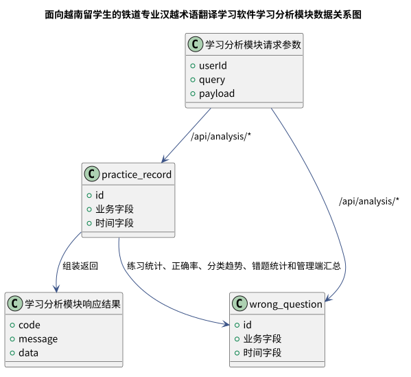
学习分析模块数据关系 UML 图用于说明面向越南留学生的铁道专业汉越术语翻译学习软件中学习分析模块请求参数、响应结果和核心数据对象之间的关系。该图由 PlantUML 生成，数据对象来自 practice_record、wrong_question，用于补充详细设计中的数据流转和结果组装说明。
学习分析模块的处理流程首先由用户在页面中触发操作，前端读取会话状态并组织请求参数；后端通过认证与角色权限中间件判断访问资格，再进入模块路由完成参数校验和业务处理。若数据查询或写入成功，页面展示业务结果；若出现未登录、越权、参数缺失或数据不存在，页面展示明确的异常状态。
异常处理方面，学习分析模块需要覆盖接口不可达、数据库连接异常、用户权限不足、表单字段缺失和返回数据为空等情况。前端应提供空状态、加载状态、错误提示或回退路径，后端应保持统一响应格式和可追溯日志。
系统管理模块面向管理员、教师，主要提供用户、角色、登录日志和操作日志查询管理。该模块的输入包括登录会话、页面查询条件、业务表单参数和分页条件，输出包括列表数据、详情数据、统计结果、提交结果或异常提示。模块对应接口或页面为 /api/system/*，核心数据对象为 sys_user、sys_role、sys_login_log、sys_operation_log。
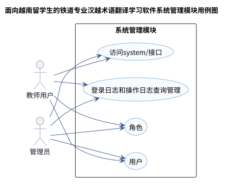
系统管理模块用例 UML 图用于说明面向越南留学生的铁道专业汉越术语翻译学习软件中管理员、教师围绕用户、角色、登录日志和操作日志查询管理形成的主要功能入口和业务动作。该图由 PlantUML 生成，图中用例来自已核验模块职责和接口路径 /api/system/*，用于放入详细设计正文。
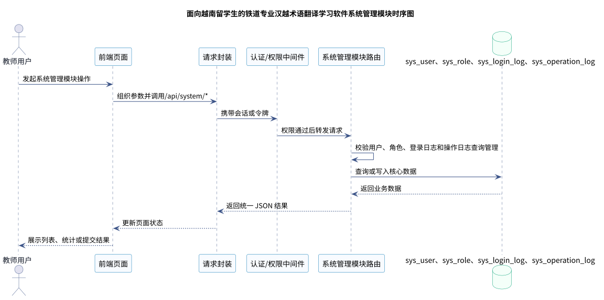
系统管理模块时序 UML 图用于说明用户、前端页面、请求封装、认证权限中间件、业务路由和数据对象之间的调用顺序。该图由 PlantUML 生成，展示 /api/system/* 的请求处理链路和 sys_user、sys_role、sys_login_log、sys_operation_log 的数据读写关系。
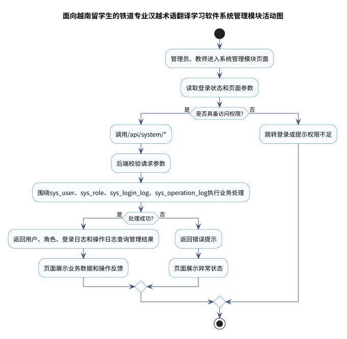
系统管理模块活动 UML 图用于说明面向越南留学生的铁道专业汉越术语翻译学习软件中系统管理模块从页面入口、权限判断、接口调用、业务处理、数据读写到结果展示的完整活动流程。该图由 PlantUML 生成，适合支撑详细设计中输入输出、处理流程和异常处理说明。
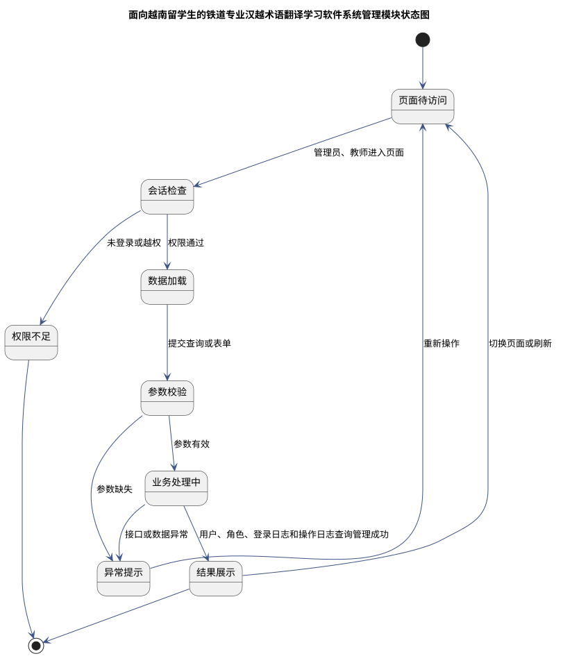
系统管理模块状态 UML 图用于说明面向越南留学生的铁道专业汉越术语翻译学习软件中系统管理模块从页面待访问、会话检查、数据加载、参数校验、业务处理、结果展示到异常提示的状态变化。该图由 PlantUML 生成，用于补充详细设计中的异常处理和状态控制说明。
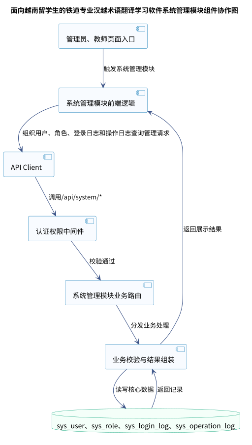
系统管理模块组件协作 UML 图用于说明面向越南留学生的铁道专业汉越术语翻译学习软件中系统管理模块的页面入口、前端逻辑、API Client、认证权限中间件、业务路由、业务校验和数据对象之间的协作方式。该图由 PlantUML 生成，用于补充详细设计中的组件职责和调用边界。
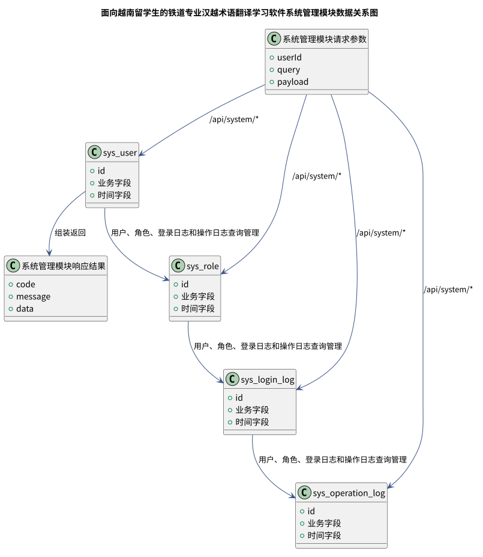
系统管理模块数据关系 UML 图用于说明面向越南留学生的铁道专业汉越术语翻译学习软件中系统管理模块请求参数、响应结果和核心数据对象之间的关系。该图由 PlantUML 生成，数据对象来自 sys_user、sys_role、sys_login_log、sys_operation_log，用于补充详细设计中的数据流转和结果组装说明。
系统管理模块的处理流程首先由用户在页面中触发操作，前端读取会话状态并组织请求参数；后端通过认证与角色权限中间件判断访问资格，再进入模块路由完成参数校验和业务处理。若数据查询或写入成功，页面展示业务结果；若出现未登录、越权、参数缺失或数据不存在，页面展示明确的异常状态。
异常处理方面，系统管理模块需要覆盖接口不可达、数据库连接异常、用户权限不足、表单字段缺失和返回数据为空等情况。前端应提供空状态、加载状态、错误提示或回退路径，后端应保持统一响应格式和可追溯日志。
数据对象关系图展示系统核心表之间的关联。不同项目的数据表名称存在差异，但均围绕用户、角色、业务主数据、记录数据、统计数据和日志数据展开，能够支撑页面展示和接口处理。
| 模块 | 核心数据对象 | 用途 |
|---|---|---|
| 认证与权限模块 | sys_user、sys_role、sys_login_log | 支撑统一登录、令牌签发、角色判断和密码修改等业务功能。 |
| 术语分类模块 | term_category | 支撑术语分类查询、新增、编辑和删除等业务功能。 |
| 铁道术语模块 | railway_term、favorite_term | 支撑汉越英术语查询、分页、检索、收藏、新增和编辑等业务功能。 |
| 练习测评模块 | practice_record、practice_answer | 支撑选择题、判断题、填空题、翻译题出题和提交判分等业务功能。 |
| 学习分析模块 | practice_record、wrong_question | 支撑练习统计、正确率、分类趋势、错题统计和管理端汇总等业务功能。 |
| 系统管理模块 | sys_user、sys_role、sys_login_log、sys_operation_log | 支撑用户、角色、登录日志和操作日志查询管理等业务功能。 |
系统通过用户身份和业务对象编号保持数据一致性。新增、修改、提交和查询操作都围绕核心数据对象展开，后端在写入前进行参数校验，在返回前统一组织响应字段。对于学习记录、成绩记录、日志记录和风险记录等可追溯数据，系统应保留创建时间、更新时间、用户编号或业务关联编号，便于后续统计和审计。
本文档中只列出关键业务接口。
| 用途 | 调用方 | 接口 | 参数 | 返回 | 脱敏示例 |
|---|---|---|---|---|---|
| 用户登录 | 前端登录表单 | POST /api/auth/login | username、password | token、user | { "username": "admin", "password": "***" } |
| 术语分页查询 | 术语列表页、练习配置页 | GET /api/terms | keyword、categoryId、difficulty、page、pageSize | rows、total、page、pageSize | /api/terms?keyword=***&page=1&pageSize=10 |
| 启动练习 | 学生练习页 | POST /api/practice/start | type、categoryId、difficulty、count | questions、total | { "type": "choice", "count": 5 } |
| 提交练习 | 学生练习页 | POST /api/practice/submit | answers、durationSeconds | score、correct、answers | { "answers": [{ "termId": 1, "userAnswer": "***" }] } |
| 学习分析 | 学生分析页 | GET /api/analysis/student | Authorization | summary、trend、wrongQuestions | Authorization: Bearer *** |
| 系统用户查询 | 系统管理页 | GET /api/system/users | page、pageSize | rows、total | /api/system/users?page=1&pageSize=10 |
用途：用户登录用于支撑前端登录表单中的核心业务动作。调用方：前端登录表单。参数：username、password。返回：token、user。脱敏示例：{ "username": "admin", "password": "***" }。该接口调用时需要根据页面状态准备必要参数，后端执行身份校验、参数校验和业务处理，最后返回统一 JSON 结构给前端页面。
用途：术语分页查询用于支撑术语列表页、练习配置页中的核心业务动作。调用方：术语列表页、练习配置页。参数：keyword、categoryId、difficulty、page、pageSize。返回：rows、total、page、pageSize。脱敏示例：/api/terms?keyword=***&page=1&pageSize=10。该接口调用时需要根据页面状态准备必要参数，后端执行身份校验、参数校验和业务处理，最后返回统一 JSON 结构给前端页面。
用途：启动练习用于支撑学生练习页中的核心业务动作。调用方：学生练习页。参数：type、categoryId、difficulty、count。返回：questions、total。脱敏示例：{ "type": "choice", "count": 5 }。该接口调用时需要根据页面状态准备必要参数，后端执行身份校验、参数校验和业务处理，最后返回统一 JSON 结构给前端页面。
用途：提交练习用于支撑学生练习页中的核心业务动作。调用方：学生练习页。参数：answers、durationSeconds。返回：score、correct、answers。脱敏示例：{ "answers": [{ "termId": 1, "userAnswer": "***" }] }。该接口调用时需要根据页面状态准备必要参数，后端执行身份校验、参数校验和业务处理，最后返回统一 JSON 结构给前端页面。
用途：学习分析用于支撑学生分析页中的核心业务动作。调用方：学生分析页。参数：Authorization。返回：summary、trend、wrongQuestions。脱敏示例：Authorization: Bearer ***。该接口调用时需要根据页面状态准备必要参数，后端执行身份校验、参数校验和业务处理，最后返回统一 JSON 结构给前端页面。
用途：系统用户查询用于支撑系统管理页中的核心业务动作。调用方：系统管理页。参数：page、pageSize。返回：rows、total。脱敏示例：/api/system/users?page=1&pageSize=10。该接口调用时需要根据页面状态准备必要参数，后端执行身份校验、参数校验和业务处理，最后返回统一 JSON 结构给前端页面。
准备 Linux 本机服务器、Node.js、npm、MySQL、Chromium 浏览器和 PDF 导出工具。数据库地址、口令、令牌密钥和接口地址使用环境变量配置，文档中统一脱敏。
建议运行环境为 2 核及以上 CPU、4GB 及以上内存、20GB 及以上磁盘空间；开发和批量截图导出环境建议 4 核及以上 CPU、16GB 内存和可用图形/无头浏览器运行环境。
安装项目依赖，确认 `package.json` 中的运行脚本可执行；前后端分离项目需分别安装前端和后端依赖。
初始化数据库，执行建表、基础数据和种子数据脚本，确保用户、角色、业务数据和测试数据存在。
启动后端服务并构建或启动前端服务，通过本机浏览器访问页面，执行登录、列表、提交、查询和截图检查。
| 项目 | 内容 |
|---|---|
| 关键脚本 | npm run build、npm run start、db:init、db:seed、seed:test-data 等项目脚本 |
| 端口 | 后端本机端口 3011，前端或页面端口 4101 |
| 防火墙 | 本机截图阶段使用本机回环地址；外部访问时仅开放必要前端或后端端口 |
| 启动检查 | 检查端口监听、健康接口、登录接口、首页 HTTP 200、截图文件和 PDF 页数 |
1. 身份认证与访问入口控制：系统通过登录接口校验账号密码，成功后签发令牌或保存会话，未登录用户不能访问受保护页面和接口。
2. 角色权限与业务数据访问控制：系统根据学生、教师或管理员角色限制页面入口和接口范围，普通用户只能访问本人相关数据，管理角色访问统计、列表和后台查询。
3. 数据安全、脱敏、日志审计与异常处理：数据库口令、令牌密钥、真实主机、账号密码、手机号和邮箱在软著材料中统一脱敏，后台对请求异常进行捕获并保留可追溯的运行信息。
| 测试类别 | 关键用例 | 验证要点 |
|---|---|---|
| UI 交互测试 | 重新采集 H5 竖屏截图和桌面管理截图 | 页面真实渲染、视口校准、表单和数据区域可见 |
| 功能测试 | 登录、列表查询、业务提交、统计查询、错题/风险/记录查询 | 接口返回正常，页面可以展示数据 |
| 安全测试 | 未登录访问、角色限制、敏感信息脱敏 | 受保护页面和接口需要令牌，文档不暴露真实敏感信息 |
| 部署测试 | 端口监听、数据库初始化、前端构建和 PDF 导出 | 服务可启动，PDF 页数满足 55-60 或裁剪规则 |
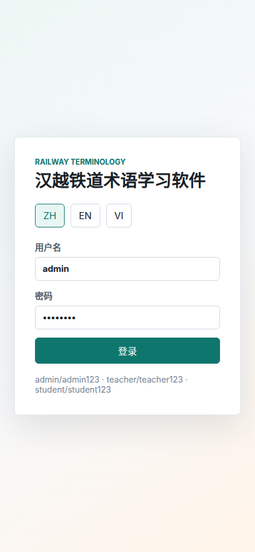
该截图文件为 01_h5_login_zh.png，对应说明文件为 01_h5_login_zh.txt。截图用于验证面向越南留学生的铁道专业汉越术语翻译学习软件V1.0的H5 中文登录页在真实运行环境中可访问，并按移动端 H5 竖屏视口校准。截图中的标题、导航、表单、列表、统计或业务结果区域可用于对应 UI 交互测试和功能测试。
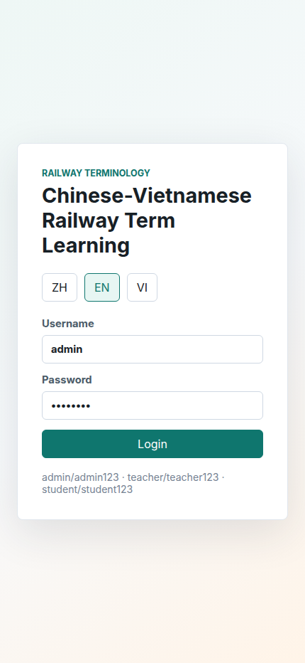
该截图文件为 02_h5_login_en.png，对应说明文件为 02_h5_login_en.txt。截图用于验证面向越南留学生的铁道专业汉越术语翻译学习软件V1.0的H5 英文登录页在真实运行环境中可访问，并按移动端 H5 竖屏视口校准。截图中的标题、导航、表单、列表、统计或业务结果区域可用于对应 UI 交互测试和功能测试。
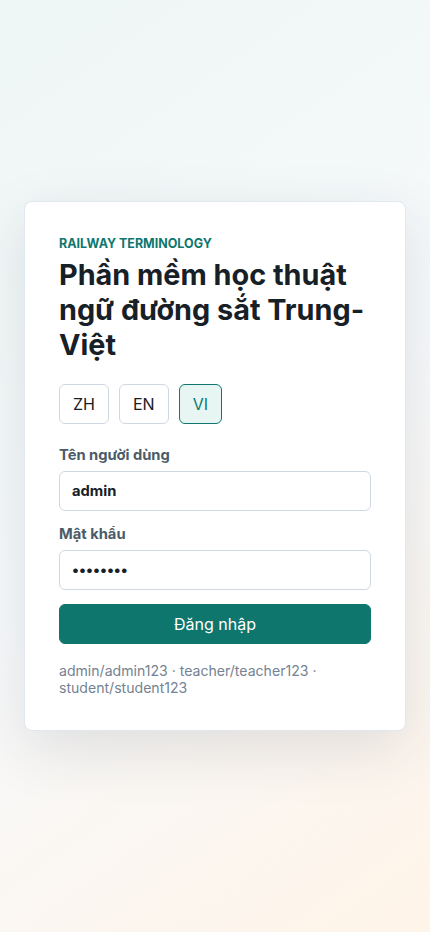
该截图文件为 03_h5_login_vi.png，对应说明文件为 03_h5_login_vi.txt。截图用于验证面向越南留学生的铁道专业汉越术语翻译学习软件V1.0的H5 越南语登录页在真实运行环境中可访问，并按移动端 H5 竖屏视口校准。截图中的标题、导航、表单、列表、统计或业务结果区域可用于对应 UI 交互测试和功能测试。
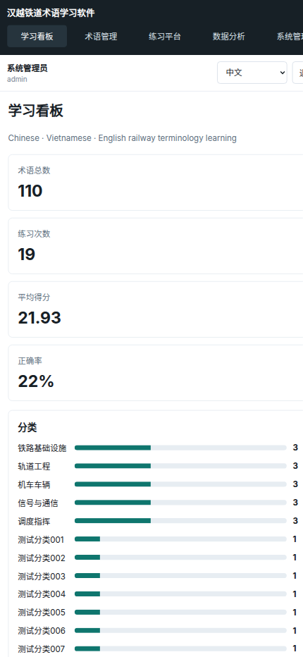
该截图文件为 04_h5_dashboard_zh.png，对应说明文件为 04_h5_dashboard_zh.txt。截图用于验证面向越南留学生的铁道专业汉越术语翻译学习软件V1.0的H5 学习看板页在真实运行环境中可访问，并按移动端 H5 竖屏视口校准。截图中的标题、导航、表单、列表、统计或业务结果区域可用于对应 UI 交互测试和功能测试。
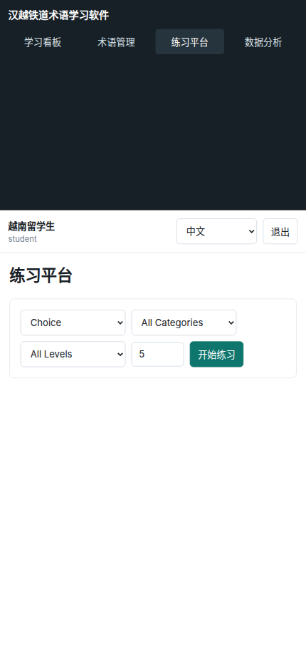
该截图文件为 05_h5_practice_config.png，对应说明文件为 05_h5_practice_config.txt。截图用于验证面向越南留学生的铁道专业汉越术语翻译学习软件V1.0的H5 练习配置页在真实运行环境中可访问，并按移动端 H5 竖屏视口校准。截图中的标题、导航、表单、列表、统计或业务结果区域可用于对应 UI 交互测试和功能测试。
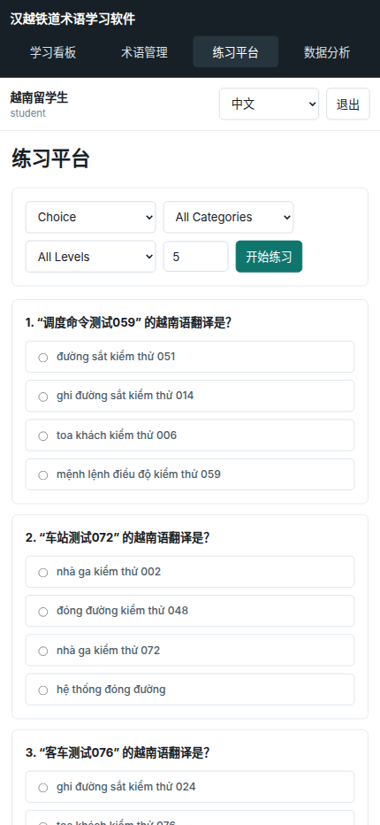
该截图文件为 06_h5_choice_practice.png，对应说明文件为 06_h5_choice_practice.txt。截图用于验证面向越南留学生的铁道专业汉越术语翻译学习软件V1.0的H5 选择题练习页在真实运行环境中可访问，并按移动端 H5 竖屏视口校准。截图中的标题、导航、表单、列表、统计或业务结果区域可用于对应 UI 交互测试和功能测试。
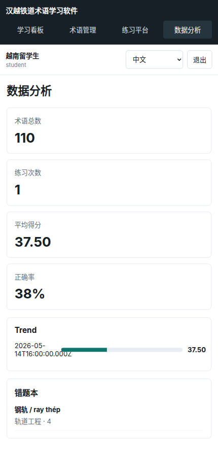
该截图文件为 07_h5_analysis_wrongbook.png，对应说明文件为 07_h5_analysis_wrongbook.txt。截图用于验证面向越南留学生的铁道专业汉越术语翻译学习软件V1.0的H5 学习分析与错题页在真实运行环境中可访问，并按移动端 H5 竖屏视口校准。截图中的标题、导航、表单、列表、统计或业务结果区域可用于对应 UI 交互测试和功能测试。
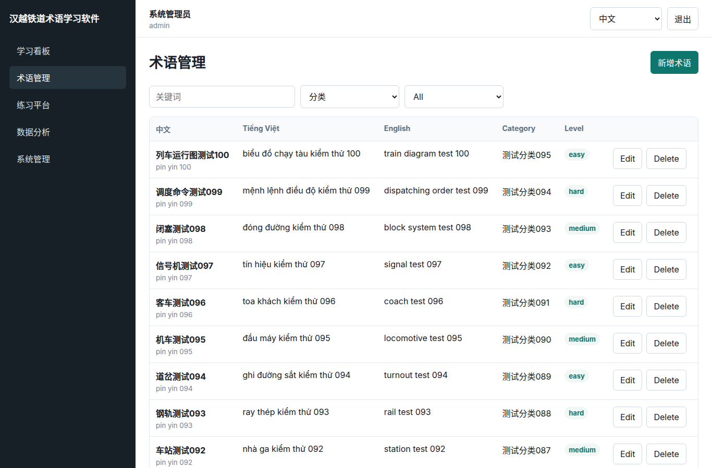
该截图文件为 08_admin_terms_list.png，对应说明文件为 08_admin_terms_list.txt。截图用于验证面向越南留学生的铁道专业汉越术语翻译学习软件V1.0的管理端术语列表页在真实运行环境中可访问，并按桌面管理页面横向视口校准。截图中的标题、导航、表单、列表、统计或业务结果区域可用于对应 UI 交互测试和功能测试。
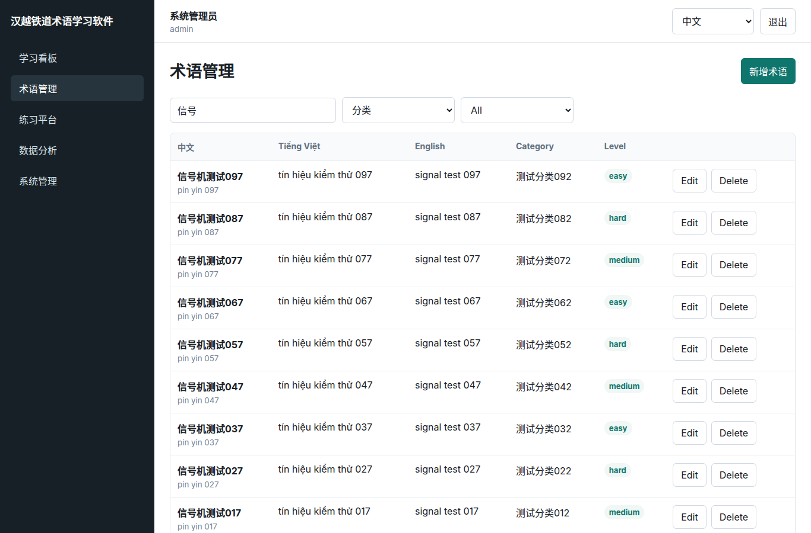
该截图文件为 09_admin_terms_search.png，对应说明文件为 09_admin_terms_search.txt。截图用于验证面向越南留学生的铁道专业汉越术语翻译学习软件V1.0的管理端术语检索页在真实运行环境中可访问，并按桌面管理页面横向视口校准。截图中的标题、导航、表单、列表、统计或业务结果区域可用于对应 UI 交互测试和功能测试。
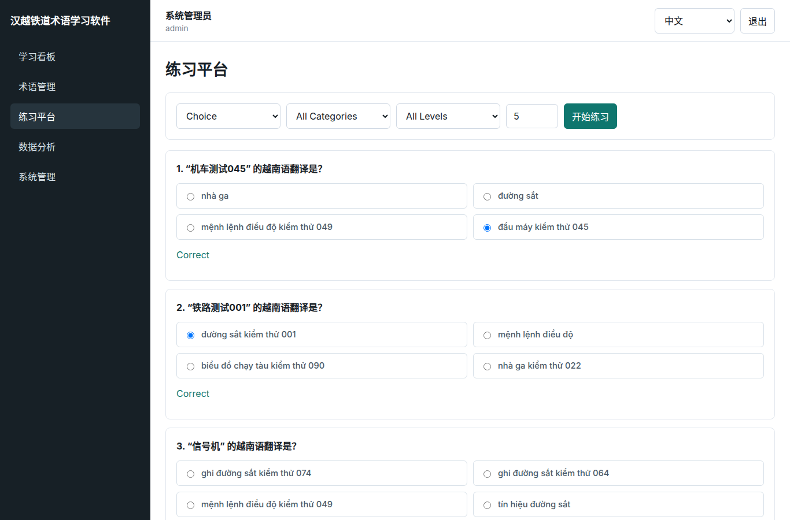
该截图文件为 10_admin_practice_result.png，对应说明文件为 10_admin_practice_result.txt。截图用于验证面向越南留学生的铁道专业汉越术语翻译学习软件V1.0的管理端练习结果页在真实运行环境中可访问，并按桌面管理页面横向视口校准。截图中的标题、导航、表单、列表、统计或业务结果区域可用于对应 UI 交互测试和功能测试。
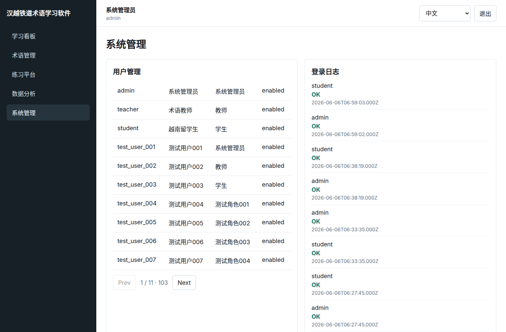
该截图文件为 11_admin_system_users.png，对应说明文件为 11_admin_system_users.txt。截图用于验证面向越南留学生的铁道专业汉越术语翻译学习软件V1.0的管理端用户列表页在真实运行环境中可访问，并按桌面管理页面横向视口校准。截图中的标题、导航、表单、列表、统计或业务结果区域可用于对应 UI 交互测试和功能测试。
该截图文件为 12_admin_dashboard_vi.png，对应说明文件为 12_admin_dashboard_vi.txt。截图用于验证面向越南留学生的铁道专业汉越术语翻译学习软件V1.0的管理端越南语看板页在真实运行环境中可访问，并按桌面管理页面横向视口校准。截图中的标题、导航、表单、列表、统计或业务结果区域可用于对应 UI 交互测试和功能测试。
面向越南留学生的铁道专业汉越术语翻译学习软件V1.0围绕留学生学习、教学或管理场景形成了前端页面、后端接口、数据库结构、运行脚本、截图材料和设计图示等完整设计内容。系统章节覆盖需求概要、总体架构、详细设计、数据设计、接口设计、部署设计、安全权限和测试验证，能够说明软件的功能范围、技术结构、运行方式和交付状态。